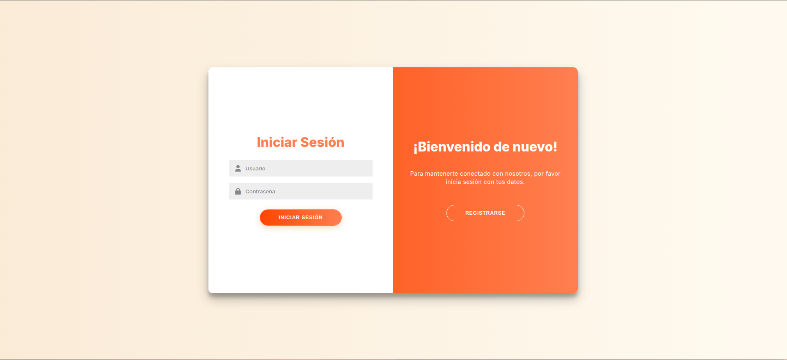
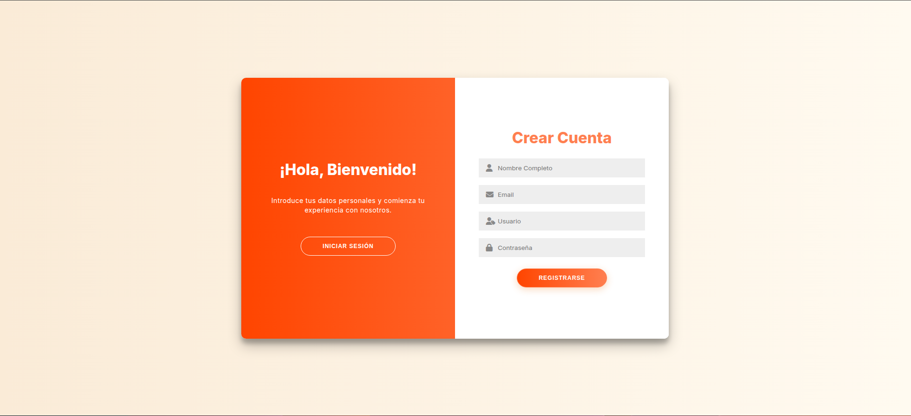
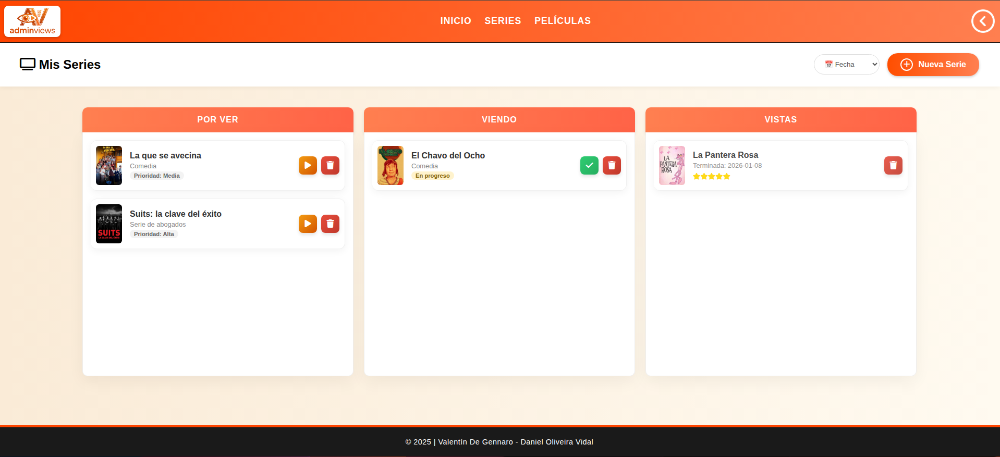
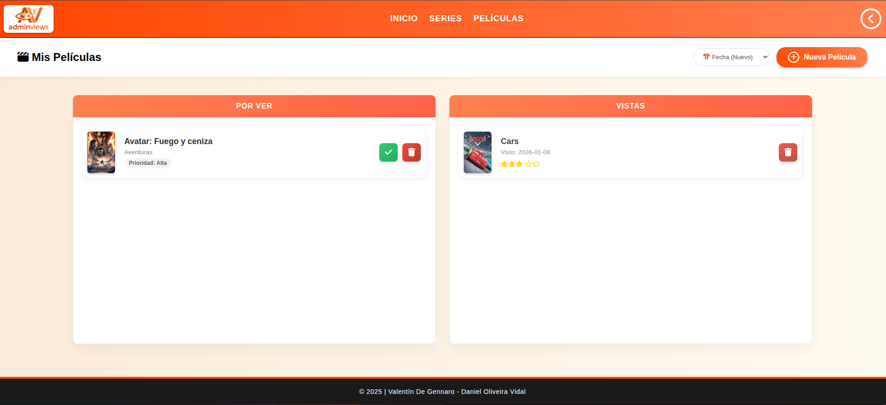
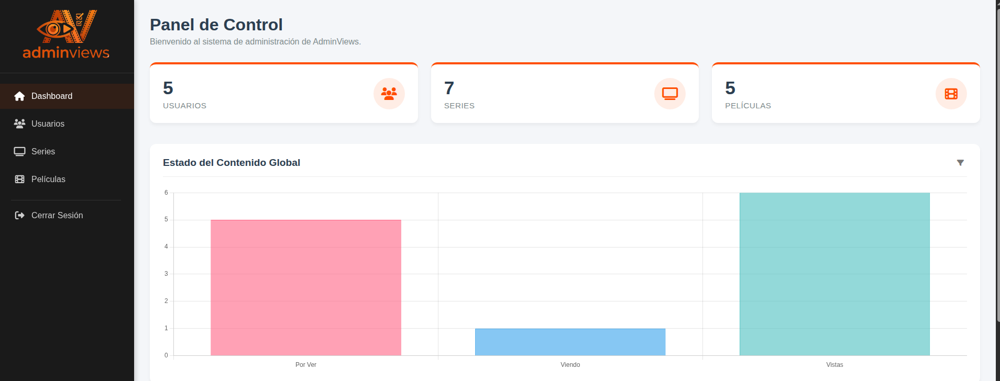
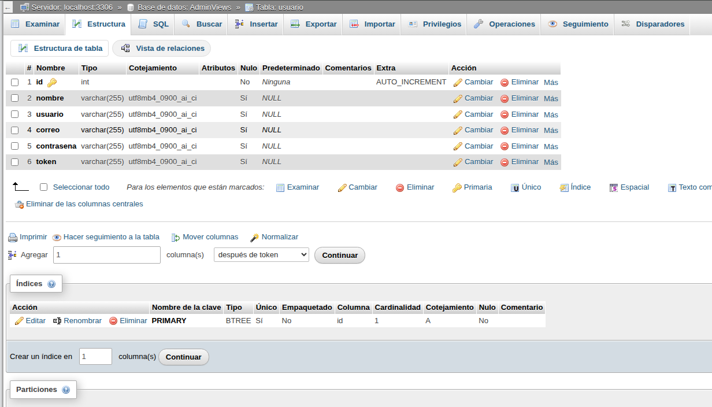
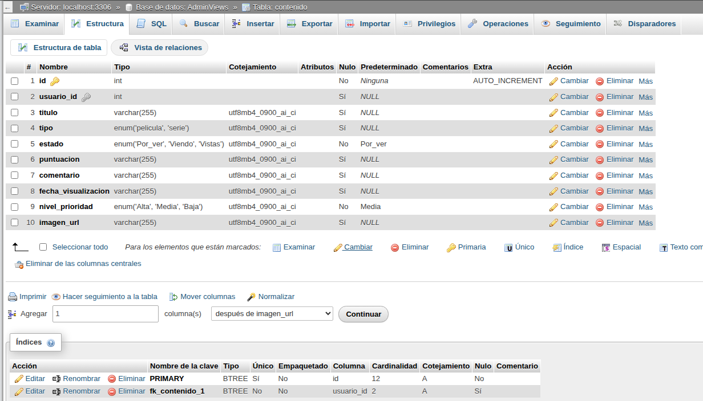
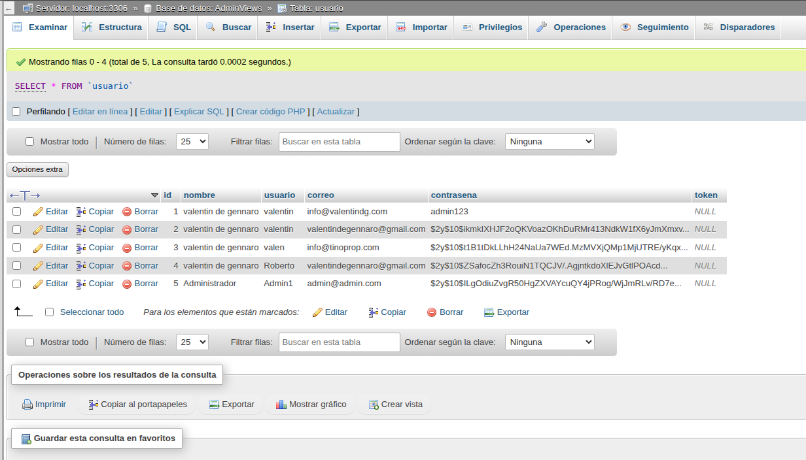
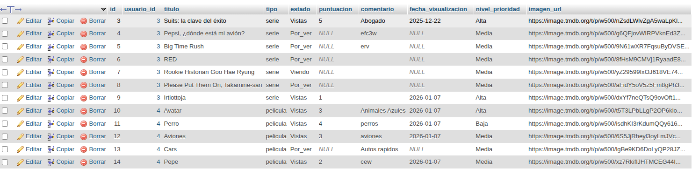
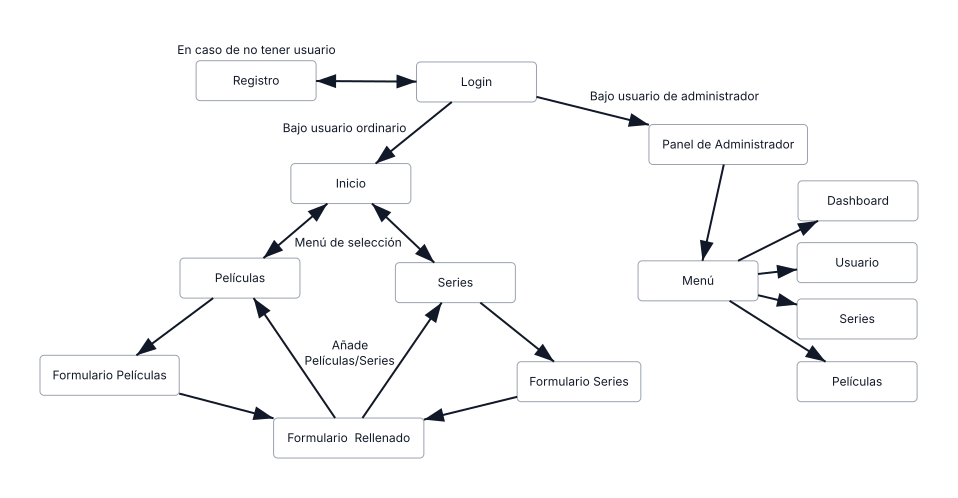

🎬 AdminViews
Gestor personal de series y películas con listas por estado y datos traídos de TheMovieDB
Escala del Proyecto
Descripción General
Llevar la cuenta de qué series estás viendo, cuáles ya terminaste y cuáles tienes pendientes acaba siempre en una nota del móvil que nadie mantiene. AdminViews resuelve eso con una aplicación web propia: te registras y organizas todo tu contenido audiovisual en listas por estado — viendo, vistas, pendientes.
El detalle que le da valor de uso real es la integración con la API de TheMovieDB: al empezar a escribir el nombre de una película o serie, la aplicación autocompleta el título y trae la carátula oficial. Sin eso, rellenar la ficha a mano hace que dejes de usarla a la tercera película.
Fue mi primer proyecto web con base de datos y autenticación real, desarrollado en pareja con Daniel Oliveira. Es también el proyecto del portafolio con documentación visual más completa: once capturas y el diagrama entidad-relación.
Tecnologías Utilizadas
PHP nativo
MySQL
HTML5
CSS3
JavaScript / Fetch
API TheMovieDB
Estructura Funcional
index.php es la página de aterrizaje con login y registro. La
sesión se mantiene con session_start().
exito.php es la primera pantalla tras iniciar sesión: el panel
principal del usuario.
peliculas.php gestiona el catálogo personal de películas y su
estado.
series.php hace lo mismo con las series.
/controladores contiene los scripts que procesan login y
registro sin renderizar interfaz.
/inc agrupa la conexión a base de datos, la cabecera y el pie
reutilizables.
/back guarda BD.sql y los diagramas del modelo
entidad-relación.
Arquitectura
Separación clara entre front/ — la aplicación web — y
back/ — el esquema y los diagramas. Dentro del front, el patrón es el
clásico de PHP nativo: cada página detecta si recibe un POST, ejecuta la consulta
correspondiente y redirige con header("Location: …") para que el
navegador recargue con los datos ya actualizados.
AdminViews/ ├── front/ │ ├── index.php # login y registro │ ├── exito.php # dashboard │ ├── peliculas.php · series.php │ ├── controladores/ # procesado de formularios │ ├── inc/ # conexión, cabecera, pie │ └── css/ · img/ ├── admin/ # panel y diagramas de BBDD ├── screenshots/ # 11 capturas + diagrama E-R ├── pruebas_CB/ # informe de pruebas caja blanca ├── informe.md · Reporte-Proyecto.md └── README.md
Integraciones Externas
Al escribir el nombre de una película o serie, una llamada con
fetch autocompleta el título y recupera la carátula oficial. Sin
esto, el alta manual haría la aplicación inservible en la práctica.
Cómo Funciona por Dentro
- Registro: se valida que el correo sea real y que la contraseña tenga más de 8 caracteres, una mayúscula y un símbolo.
- Cifrado: la contraseña se guarda con
password_hash(), nunca en claro. - Login: se busca al usuario y se compara la contraseña con el
hash almacenado usando
password_verify(). - Búsqueda: al escribir un título, JavaScript consulta TheMovieDB y autocompleta los datos y la carátula.
- Acción del usuario: el formulario envía un POST con la acción — agregar, mover, borrar — al propio fichero.
- Procesado: PHP detecta el POST, ejecuta la consulta SQL y
redirige con
header()para mostrar el estado actualizado.
Seguridad Implementada
- Contraseñas cifradas con
password_hash()y verificadas conpassword_verify(). - Política de contraseña: mínimo 8 caracteres, al menos una mayúscula y un símbolo.
- Validación del formato del correo electrónico en el registro.
- Sesiones PHP para el control de acceso a las páginas privadas.
- Redirección tras POST para evitar reenvíos del formulario al recargar.
Capturas
El repositorio incluye once capturas de la aplicación real y el diagrama entidad-relación de la base de datos.











Retos Técnicos y Decisiones de Diseño
Una API externa cambia por completo la usabilidad
La primera versión pedía escribir el título y la URL de la carátula a mano. Funcionaba, pero nadie la usaría dos veces. Conectar TheMovieDB fue lo que la convirtió en algo usable a diario: la diferencia entre un ejercicio y una aplicación está en cuántos campos tiene que rellenar el usuario.
Hacer bien la autenticación desde el principio
Era mi primer proyecto con usuarios reales y decidí no atajar: hash con
password_hash(), verificación con password_verify() y una
política de contraseña exigida en el registro. Es la base que después reutilicé en
todos los proyectos posteriores.
Documentar como parte del trabajo
El repositorio incluye informe.md, Reporte-Proyecto.md, un
informe de pruebas de caja blanca con sus decisiones de código, once capturas y el
diagrama E-R. Aprendí aquí que un proyecto sin documentación es un proyecto que no
se puede enseñar.
Mi Rol
Desarrollo compartido con Daniel Oliveira.
Participé en el modelo de datos, la autenticación, los módulos de series y películas, la integración con TheMovieDB y la documentación del proyecto.
Estado del Proyecto
En producción en adminviews.valentindg.com. Incluye
informe de proyecto y pruebas de caja blanca documentadas.